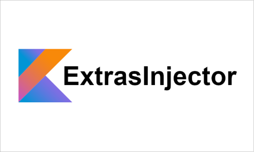
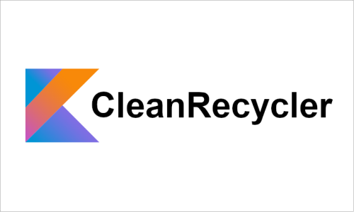

Simplify your code to its minimum expression with this set of Kotlin extensions for Realm. Forget about the all boilerplate related with Realm API and perform database operations in one line of code with this lightweight library. Full test coverage.

Library written completely in Kotlin. It reduces boilerplate related with passing extras through activities and arguments through fragments. This library allows you to inject extras directly in the class you want, like your presenter if you use MVP, or your viewmodel if you use MVVM.
KPresenterAdapter is a lighweight Android library to implement adapters for your RecyclerViews in a clean way, using the MVP pattern. The main purpose of this library is to organize your adapter related code so that you will only have to focus on writing the pieces of code that really matters: view classes and presenter classes for that views, like you would do with your fragments or activities. Additionally, this library provides other useful features you might find useful.

CleanRecycler is a library written completely in Kotlin and built on top of KPresenterAdapter. While the main purpose of KPresenterAdapter is to provide a framework to organize your adapter-related code following the MPV pattern, this library aims to reduce the boilerplate code related with data loading from diferent datasources, data pagination and placeholders management.
Lightweight binding engine based on annotation processing. Bind your view model to your views throught simple annotations with arguments that let you format and customize the binding process.
Annorate your subscriptions with @AutoSubscription, and dispose all your subscriptions in a single line, with Unsubscriber.unlink(this).